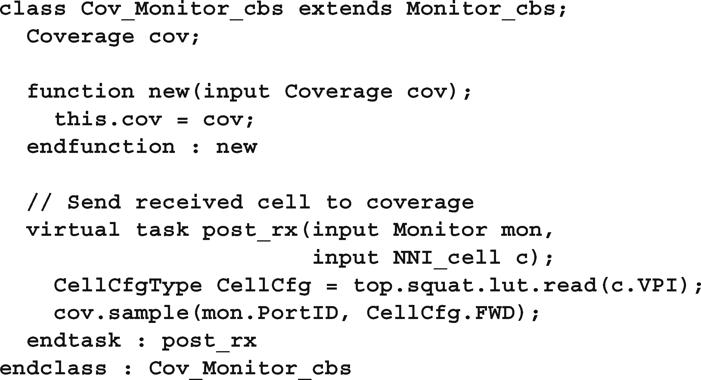
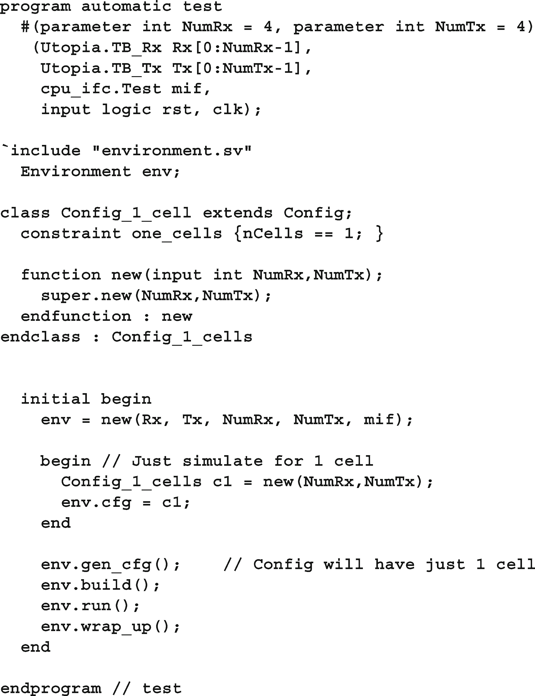

第11章 一个完整的SystemVerilog测试台
本章应用您所学到的有关SystemVerilog特性的许多概念来验证设计。testbench创建有约束的随机刺激，并收集功能覆盖。它的结构根据第8章的指导方针，所以你可以注入新的行为，而不需要修改低级块。
Sutherland[2006]所展示的设计是一个ATM交换机，他的SystemVerilog描述基于Janick Bergeron的验证协会的一个例子。Sutherland采用最初的Verilog设计，并使用SystemVerilog设计特性创建了一个可以从4×4配置到16×16的交换机。原始示例中的testbench使用$urandom创建ATM单元格，用ID值覆盖某些字段，通过设备发送它们，然后检查是否收到了相同的值。
整个示例，包括testbench和ATM交换机，可以从http://chris.spear.net/systemverilog下载。本章只展示了testbench代码。
11.1. 设计模块
图11.1所示的设计与试验台的整体连接遵循第四章的模式。
| ||
|---|---|---|
|
图11.1试验台设计环境
设计的顶层称为深蹲，如图11.2所示。模块有1..N个发送UNI格式的cell的Utopia Rx接口。在DUT内部，单元被存储，转换成NNI格式，并转发到Tx接口。转发是根据用传入单元的VPI字段寻址的查找表来完成的。该表通过管理接口进行编程。
图11.2深蹲设计方框图
示例11.1中的顶级模块为Rx和Tx端口定义了接口数组。
示例11.1顶级模块
示例11.2中的testbench程序通过端口列表传递接口和信号。关于端口与跨模块参考的讨论，请参阅第10.1.4节。实际的testbench代码在Environment类中。该程序通过环境的各个阶段。为了在更高的抽象级别上工作，testbench只使用接口中的时钟块与DUT同步，而不使用低级别时钟。
示例11.2 Testbench程序
testbench通过管理接口(也称为CPU接口)将控制信息加载到ATM交换机中，如示例11.3所示。在本章的示例中，该接口仅用于加载将VPI映射到转发掩码的查找表。
示例11.3 CPU管理接口
示例11.4展示了Utopia的接口，该接口通过发送和接收ATM小区与蹲式设计通信。该接口具有发送和接收路径的时钟块，以及用于设计和测试工作台连接到该接口的modports。
样本11.4乌托邦界面
11.2. Testbench块
环境类，如8.2.1节所示，是支持testbench结构的脚手架。在这个类中有您的分层测试工作台块，例如生成器、驱动程序、监视器和记分板。该环境还控制四个testbench步骤的顺序:生成随机配置、构建testbench环境、运行测试并等待测试完成，以及关闭系统并生成报告的收尾阶段。样例11.5显示了ATM环境类。它使用示例11.3中定义的虚拟接口vCPU_T。
示例11.5环境类头
使用$test$plusargs()系统任务，示例11.6中的环境类构造函数查找VCS switch +ntb_random_seed，它为模拟设置随机种子。系统任务$value$plusargs()从交换机中提取值。你的模拟器可能有不同的方式设置种子。在日志文件中打印种子是很重要的，这样如果测试失败，您就可以用相同的值再次运行它。
示例11.6环境类方法
样例11.6中构建的方法Environment::使用回调类将记分板连接到驱动程序和监视器，如样例11.7中的Scb_Driver_cbs所示。这个类将期望的值发送到记分板。基本驱动程序回调类Driver_cbs在示例11.20中显示。
示例11.7回调类连接驱动程序和记分牌
示例11.8中的回调类Scb_Monitor_cbs将监视器与记分板连接起来。基本监视器回调类Monitor_cbs在示例11.21中显示。
示例11.8回调类连接监视器和计分板
环境通过最后的回调类Cov_Monitor_cbs将监视器连接到覆盖率类，如示例11.9所示。
示例11.9回调类连接监视器和覆盖率

示例11.10显示了随机配置类头。它从nCells开始，这是一个用来表示流经系统的细胞总数的随机值。约束c_nCells_valid通过大于0来确保有效的单元格数，而c_nCells_reasonable将测试限制为合理的大小，即1000个单元格。如果您想要更长的测试，可以禁用或重写它。
接下来是一个动态位数组，in_use_Rx，用来指定进入交换机的哪个Rx通道是活动的。样例11.6在run方法中使用此方法，以便只运行活动通道。
数组cells_per_chan用于在活动通道上随机划分单元的总数。约束zero_unused_channels将非活动通道的单元格数设置为0。为了帮助求解器，在通道间划分单元之前，先解决了活动通道掩码。否则，一个通道只有在分配给它的细胞数为零时才会是不活动的，这是非常不可能的。
示例11.10环境配置类
单元重写和转发配置类型如示例11.11所示。
示例11.11单元配置类型
configuration类的方法如示例11.12所示
示例11.12配置类方法
ATM交换机接受UNI格式的单元格并发送NNI格式的单元格。这些单元通过OOP测试平台和结构设计发送，因此使用typedef定义它们。这两种格式的主要区别是，UNI的GFC和VPI字段合并到NNI的VPI中。示例11.13到11.15中的定义来自Sutherland[2006]。
样本11.13 UNI cell格式
示例11.14 NNI单元格格式
UNI和NNI单元与字节内存合并，形成一个通用类型，见示例11.15。
样品11.15 ATMCellType
testbench生成受约束的随机ATM单元，如示例11.16所示，它是从示例8.24中定义的BaseTr类扩展而来的。
示例11.16 UNI_cell定义
示例11.17显示了单元的方法。
示例11.17 UNI_cell方法

NNI_cell类几乎与UNI_cell相同，除了它没有GFC字段，也没有转换为UNI_cell的方法。
示例11.18展示了UNI cells随机原子发生器，如最初在8.2节中所示。生成器随机化单元的蓝图实例，然后将单元的副本发送给驱动程序。
示例11.18 UNI_generator类
示例11.19显示了将UNI单元发送到ATM交换机的驱动程序类。这个类使用了示例11.20中的驱动程序回调。注意这里有一个循环关系。驱动程序类有一个Driver_cbs对象队列，Driver_cbs中的pre_tx()和post_tx()方法被传递给驱动程序对象。当你编译这两个类时，你可能需要其中一个类型定义类驱动;在驱动_cbs类定义之前，或者定义类型驱动_cbs类之前;在驱动类定义之前。
示例11.19驱动程序类

示例11.20显示了驱动程序回调类，它具有简单的回调，在传输单元之前和之后调用。该类有默认使用的空任务。测试用例可以扩展这个类，在驱动中注入新的行为，而不需要改变驱动中的任何代码
示例11.20驱动程序回调类
示例11.21中的Monitor类有一个非常简单的回调，在接收到单元格后只调用一个任务。
示例11.21监视回调类

示例11.22显示了Monitor类。像驱动程序类一样，这个类使用
类型定义以打破与Monitor_cbs的循环编译依赖关系。
示例11.22 Monitor类
示例11.23中的计分板通过save_expected函数从驱动程序获得预期的单元格，并通过check_actual函数由监视器实际接收到单元格。函数save_expected()从回调Scb_Driver_cbs::post_tx()调用，如示例11.7所示。在示例11.8中，函数check_actual()从Scb_Monitor_cbs::post_rx()调用。
示例11.23记分牌类
示例11.24显示了用于收集函数覆盖率的类。由于cov- average只查看单个类中的数据，覆盖组是在Coverage类中定义和实例化的。数据值由类的sample()方法读取，然后调用封面组的sample()方法来记录这些值。
示例11.24功能覆盖类
样例11.25展示了包含驱动CPU接口的方法的CPU_driver类。
示例11.25 CPU_driver类
11.3. 替代测试
示例11.2显示了最简单的测试程序，并在很少的约束下运行。在验证期间，您将创建许多测试，这取决于要测试的主要功能。然后可以用不同的种子运行每个测试。
11.3.1 你的第一个测试，只有一个细胞
您运行的第一个测试可能只有一个单元格，例如Sample中的测试
11.26。您可以通过扩展Config类来添加新的约束，然后
在随机化之前向环境中注入一个新对象。一旦测试成功，您可以尝试两个单元格，然后重写对单元格数量的约束以运行更长的序列。
样品11.26用一个细胞测试

11.3.2 随机细胞下降
您可能会运行的下一个测试通过偶尔删除单元格来创建错误，如示例11.27所示。你需要为设置下降位的驱动程序做回调。然后，在测试中，在构建阶段构建驱动程序类之后注入这个新功能。
示例11.27使用驱动回调删除单元格的测试
11.4. 结论
本章将向您展示如何按照本书的指导原则构建一个分层测试平台。然后，只需修改单个文件并注入新的行为，就可以创建新的测试，利用回调等钩子和多个环境阶段。
testbench能够达到ATM交换机100%的功能覆盖率，至少对于基本覆盖组来说是这样。您可以使用这个示例来研究更多关于SystemVerilog testbench的内容。
11.5. 练习
1. 在示例11.2中，为什么clk没有被传入程序测试的端口列表?
2. 在示例11.6中，可以用numRx替换Rx.size()吗?为什么或为什么不?
3. 对于下面的示例11.6中的代码片段，解释为每个语句创建了什么。
在示例11.9中，句柄cov指向什么覆盖对象?
在示例11.17中，函数UNI_cell::copy假设对象UNI_cell的句柄指向一个类UNI_cell的对象，如下图所示。为下面的函数调用绘制dst句柄所指向的对象。
处理
副本();
复制(处理);
在示例11.18中，为什么需要$cast () ?
在样例11.19和11.20中，为什么需要typedef声明?
在示例11.19中，为什么先使用peek()，然后再使用get()?
在示例11.23中，错误信息是"…cell not found…"在函数中每次调用时都打印check_actual ?为什么或为什么不?
为什么类环境，记分牌，和CPU_driver都定义一个句柄类配置?是否创建了类配置的3个对象?